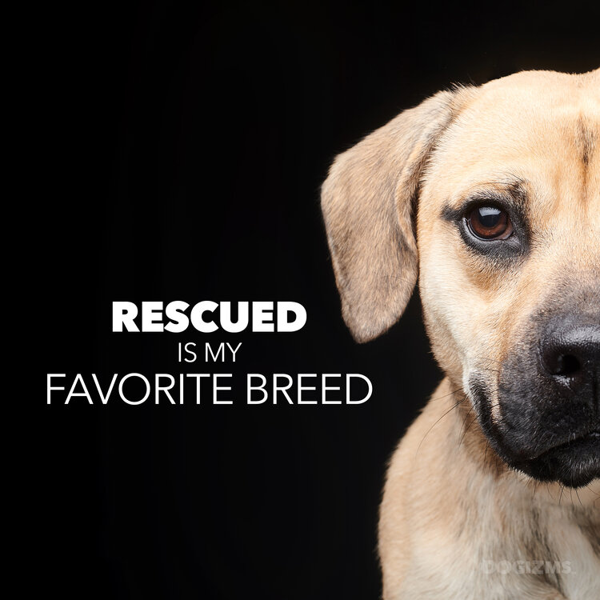

Saving one dog will not change the world, but surely for that one dog, the world will change forever.

Visit an animal shelter, or rescue, just once and you will realize the importance of adopting these animals. Many are surrendered by family who are unable to provide for them, or who simply do not want them any longer. Some bare strays. And of course there are stories that I just don’t want to get into. Sometimes animals go through abuse that is completely unimaginable. But it’s never their fault. Putting words to some of the images I’ve captured at our local Humane Society, the Humane Society of Marathon County, have been some of my favorite “Dogizms” to create. It’s my hope that they will be shared and inspire someone to visit a shelter. Who knows, maybe they will fall in love with a furry face and become a family!
“Rescued is my favorite breed.”
“You can’t buy love, but you can rescue it.”
“Money can buy a fine dog, but only love can make him wag his tail.”
“A lot of shelter dogs are mutts like me.” - Barack Obama
“Do not pity a shelter dog. Adopt one.”
“Do you believe in love at first sight, or should I wag my tail again?”
“Who rescued who?”
“Dogs have a way of finding the people who need them, and filling the emptiness we didn’t ever know we had.” - Thom Jones
“You can’t change a dog’s past, but you could rewrite his future.”
“Can you tell me the story about how you rescued me again?”
“Some people see an unfortunate dog sitting in a shelter. I see an angel someone threw away.”
“Everybody should have a shelter dog. It’s good for the soul.” - Paul Shaffer
“Saving on dog will not change the world, but surely for that one dog, the world will change forever.” - Karen Davison